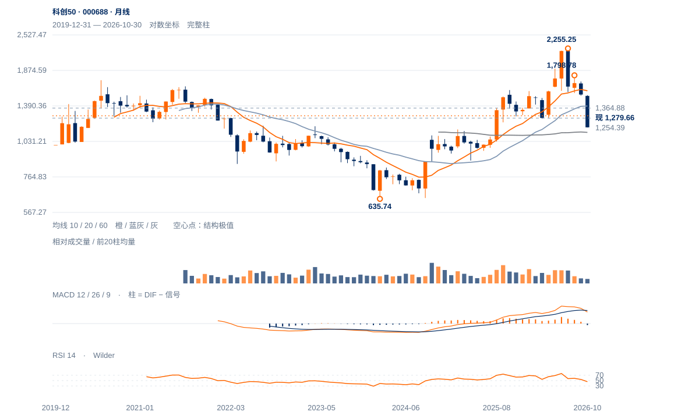

上冲保持失败
短线相对韧性仍在，但12日上试后的供应得到13日弱收盘跟进。当前先核1253—1274，重新收回1329—1352并保持才能削弱上冲失败解释。
短线相对韧性仍在，但12日上试后的供应得到13日弱收盘跟进。当前先核1253—1274，重新收回1329—1352并保持才能削弱上冲失败解释。
未来2—6周以1253—1365反复为主，1253附近失守将增加再试1230及1132的风险。重新站稳1329并通过原两日过滤后，才支持向1389—1445扩展。
未来1—3个月重点检验本月能否收回并保持1254—1274。完成月线回收且周谷抬高，才有长期修复依据；若再次月收低于1254并日收破1132，长期承接假设将明显减弱。

展开图表 ↗2024低点635.74至今年7月2255.25的上涨已回吐60.24%。61.8%回撤1254.39接近今年3月1249.01及去年11月1273.49，形成1250—1274的长期价格记忆区。但10月月收1160.84曾落到其下，当前11月收回尚属进行中，不能宣称月线已经确认重夺。2021高1639附近也与长波38.2%回撤1636.60接近，仍是远端阻力背景。
7月2255之后，8月1799、9月1708的反弹高点持续下降，11月3日跌至1132.33。当前反弹虽强于部分成长指数，12日高量上试1364.88后弱收，13日继续回落；长期支撑区附近的买方参与与反弹供应同时存在，尚未形成周线向上结构。
1254回撤位与1249—1274旧低区重合，提供长期承接依据；1365上试后出现反向跟进，短线供应仍待消化。
12日盘中越过1329和1352至1364.88，却收1309.84，上影占振幅88.2%、量比1.24；13日收1279.66、位置13%，买方未能重新接管。
本周仍涨2.11%，较10日涨1.16%，且略在20日线上；但近20日相对沪深300比值仍跌2.19%，周线仍受较大下降结构约束。
9月左高至1132.33低点跌33.69%，12日触及1352.11识别参考；此后回落不能抹掉触及，但也不能当成原1329两日收盘确认。当前价差修复仅25.6%。
先收回1300—1329；原1329两日规则保留，1352—1365保持会明显改善结构。
1230近端减弱、1132结构底线各自保留，不把今日上冲失败外推为旧底已破。
20日OBV仍正，长线支撑依据也在附近；若1250附近拒跌后重新越过1365，当前上冲失败可能只是一段换手。
| 周期 | 最后完整柱 | 图示柱数 | RSI14 | ATR14 | MACD柱 |
|---|---|---|---|---|---|
| 日线 | 2026-11-13 | 185 | 44.15477 | 59.68831 | 18.27644 |
| 周线 | 2026-11-13 | 156 | 38.59644 | 153.98942 | -55.80104 |
| 月线 | 2026-10-30 | 83 | 45.9247 | 250.02997 | -18.65848 |
国内完整周线至11月13日；11月月线进行中。指数价格不复权，长期历史按实际可用起点。